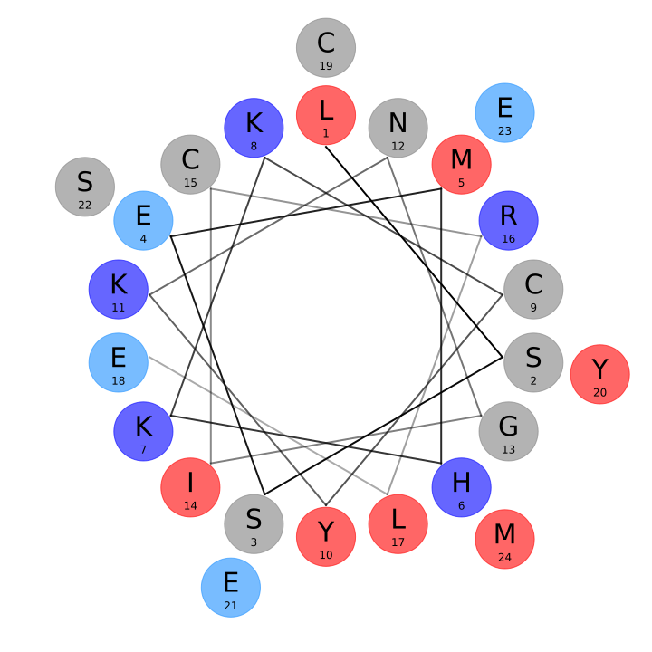
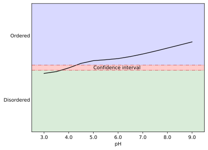

ASYNP75
Entry details
aSynPEP ID
ASYNP75
Peptide name
Beta-defensin 134
Type
Antimicrobial
Source ID
UniProt Accession number
NCBI Taxon ID
aSynPEP features
Peptide sequence
Peptide length: 47
Longest inhibitory region: 5-28
10 20 30 40
GINSLSSEMH KKCYKNGICR LECYESEMLV AYCMFQLECC VKGNPAP
Helical wheel

Helicity (AGADIR)
4.9
Amphipathicity (uH)
0.23
NCPR
+0.1
Hydrophobicity (H)
0.27
Physicochemical properties
pI
7
Mass
2.88 kDa
Predicted properties
AlphaFold structural model
pH of order (DispHred)

Cytotoxicity (ToxIBTL)
toxic | probability=1.00E+00
Blood Brain Barrier permeability (BBPPred)
BBP | probability=0.60
Cell-penetrating (BchemRF-CPPred)
Non-CPP | probability=92.65%
Expression
Gut/brain expression
By ProteomicsDB